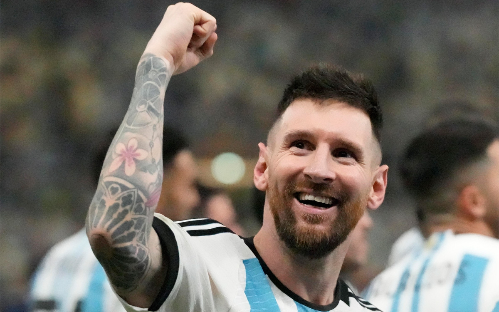

Argentina Campeon del Mundo
Los 'muchachos' por fin tienen la tercera Copa. Al Mundial de 1978 de Mario Kempes y al de 1986 de Diego Maradona le acompaña ya en el Olimpo del fútbol argentino el de 2022 de Leo Messi. Después de llorar las finales perdidas con su país (especialmente dura fue la de 2014 en el Maracaná) el '10' ya tiene su estrella con Argentina que le empareja con el 'Diez'. El debate futbolístico comienza a despejarse entre los dos genios del fútbol mundial.
A sus 35 años, el Leo más líder y 'canchero', llevó hasta la cima a Argentina con una actuación 'maradoniana'. Se le vio en su 'prime' a pesar de haber perdido parte de su 'chispa'. Fue decisivo en los grupos y en los cruces con sus goles y asistencias. Todavía brillando en el epílogo de su carrera en el PSG, Messi recuperó la corona que lleva tatuada desde hace años cuando se 'pegaba' con Cristiano Ronaldo por el cetro del fútbol. Ahora lo hace con un Mbappé que todavía tendrá que esperar para ocupar su lugar. Francia no pudo con él.
A la historia de Leo le faltaba el capítulo del Mundial para ser el mejor. Y Leo ya lo ha escrito en Qatar. Argentina suspiró durante décadas por una Copa que les ha traído Messi. Un regalo para siempre.